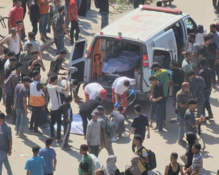
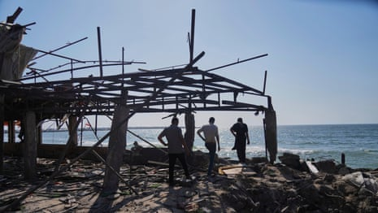
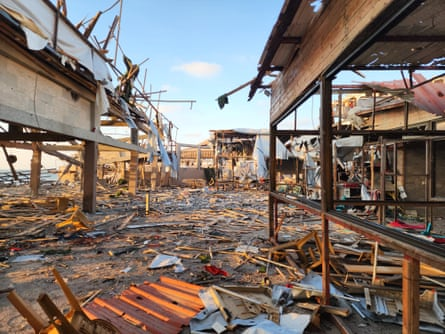

Witnesses have described the bloody aftermath of an Israeli strike on a crowded seaside cafe in Gaza , which left at least 24 dead and many more injured on Tuesday.
Al-Baqa cafe, close to the harbour in Gaza City, was almost full in the early afternoon when it was hit by a missile, immediately transforming a scene of relative calm amid the biggest urban centre in Gaza into one of carnage.
Among those killed, who included many women, children and elderly people, was a Palestinian photojournalist, Ismail Abu Hatab, and an artist, Frans al-Salmi, who had exhibited internationally.
Ismail Abu Hatab, a photojournalist, was among those killed at the cafe.Photograph: Ismail Abu Hatab
The Israel Defense Forces (IDF) said on Tuesday that it was reviewing the attack, which it said had struck “several Hamas terrorists in the northern Gaza Strip”.
Abu al-Nour, 60, said he had stepped outside the cafe to get some lunch and was returning when the attack took place.
Aftermath of the Israeli airstrike at Al-Baqa cafeteria on Gaza’s seafront.Photograph: Enas Tantesh/The Guardian
“Just as I was close, a missile struck. Shrapnel flew everywhere, and the place filled with smoke and the smell of gunpowder. I couldn’t see anything. I ran toward the cafe and found it destroyed. I went inside and saw bodies lying on the ground. All the cafe workers were killed,” he told the Guardian.
“There was a family there with their young children – why were they targeted? It was a place where people came to find some relief from the pressures of life.”
The cafe and restaurant had so far survived more than 20 months of war and offered some respite from the relentless violence of the conflict.
“There’s always a lot of people at that spot, which offers drinks, spaces for families and internet access,” said Ahmad al-Nayrab, 26, who was walking on the nearby beach when he heard a loud explosion.
“It was a massacre,” he told AFP. “I saw bits of bodies flying everywhere, bodies mangled and burned. It was a bloodcurdling scene; everybody was screaming.”
Adam, 21, was working nearby, renting chairs and tables on the small promenade.
Israeli airstrike on popular Gaza beachside cafe leaves at least 30 dead – video report
“When the strike happened, we dropped to the ground as shrapnel began falling on us. We started running, trying to understand what had happened, and we helped with the rescue efforts. When I reached the site, the scenes were beyond anything imaginable. I knew all the workers at the place. It was full of customers of all ages,” he told the Guardian.
Other witnesses described seeing a dead four-year-old child, an elderly man with both legs severed and many others with severe injuries. Photographs showed pools of blood and flesh amid shattered concrete columns and roofing, as well as a deep crater suggesting the use of a powerful weapon by Israel.
The IDF spokesperson said that “prior to the strike, steps were taken to mitigate the risk of harming civilians using aerial surveillance”.
The cafe and restaurant had survived more than 20 months of war and offered some respite from the relentless violence of the conflict.Photograph: Enas Tantesh/The Guardian
Two other strikes in Gaza City killed 15 people, according to al-Shifa hospital, which received the casualties, and there were also reports from witnesses, hospitals, and Gaza’s health ministry that Israeli forces killed 11 people who had been seeking food in the south of the territory.
Israel has ramped up its offensive in Gaza in recent days, with multiple waves of airstrikes and new “evacuation orders” which have forced tens of thousands of people to leave makeshift homes across a swath of the north of the devastated territory.
The orders warned of impending assaults and told Palestinians to head south to overcrowded coastal zones where there are few facilities and a limited supply of water. About 80% of the territory is now covered by such orders or controlled by Israeli forces.
The IDF has signalled that it plans to advance into the centre of Gaza City, the most densely populated part of Gaza, to fight Hamas militants based there.
The war began when Hamas-led militants launched an attack into southern Israel on 7 October 2023, killing about 1,200 people, mostly civilians, and taking about 250 hostages back to Gaza.
Israel’s subsequent military offensive has killed more than 56,500 Palestinians, mostly civilians, displacing almost the entire 2.3 million population of Gaza and reducing much of the territory to rubble.